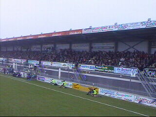
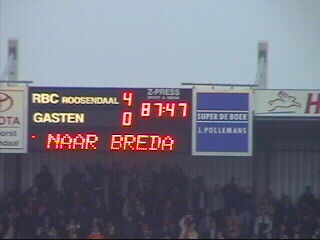

|
RBC - Roda JC (4-0) 17 november 2002 |
Het begin van een shit-wedstrijd.
Het volgend seizoen wordt het V&G-stadion met
een
ring uitgebreid.
Poseren voor de VOLTA-vaan.
Wiljan, waar is je nieuwe koempels-shirt?
Het drinktempo in het supporterscafé van RBC
is zelfs
voor geoefende Bourgondiërs nauwelijks
bij te benen...

Volgende keer een beetje beter centreren graag.
Ongeveer 300 Rodasupporters.
Roda speelt een ongeïnspireerde partij. In de
30e min.
wordt het 1-0 door een doelpunt van
Den Ouden uit een
vrije trap die werd genomen
voordat iemand daar erg in
had.

De wave gaat door het mini-stadion.

De voorzitter van de GSF (rechts) zag zijn idool
niet
opdraven vanmiddag.
In de 53e min. is het weer feest bij de thuisclub.
Den Ouden scoort zijn tweede: 2-0.
Luinge regelt de "Oranje"-muur. De vrije trap
genomen
door Anastasiou levert niks op.
Brouwers ontvangt zijn tweede gele kaart en kan
inrukken. RBC krijgt een strafschop.
Vos schiet beheerst raak, 3-0 (85').
Drie minuten later scoort Fleur 4-0 (88').

Het is ongelooflijk, maar Roda wordt ongenadig
afgestraft in Roosendaal.
Nygaard had het fatsoen om de meegereisde
supporters te bedanken. Op dat moment waren
een
aantal clubgenoten al afgedropen. Vloet
dirigeerde ze
echter rap terug!
Praktisch! De auto-reizigers konden bij de bussen
parkeren.
Het afscheidscomité van RBC.
Zo voelden de meesten van ons zich na afloop van
dit
enorme debacle!